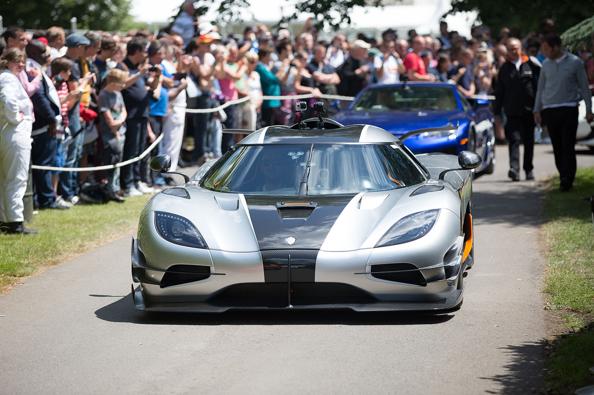
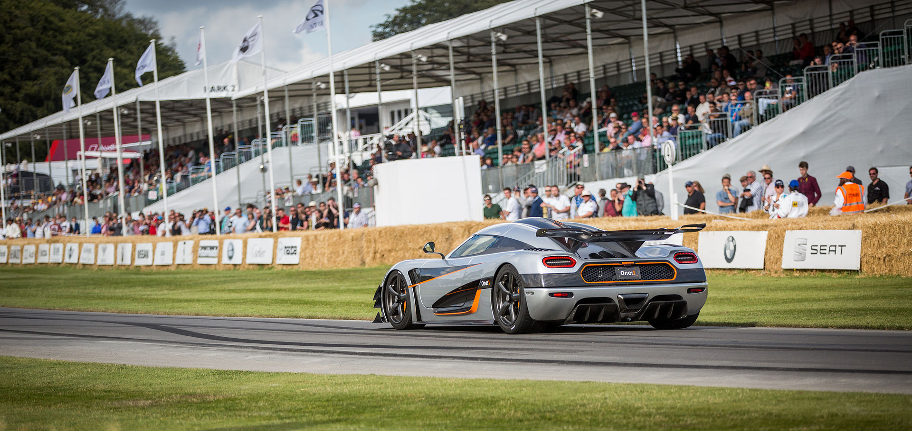
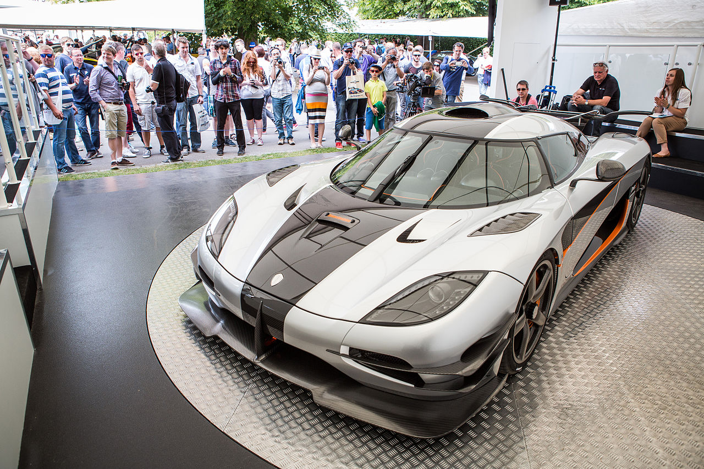
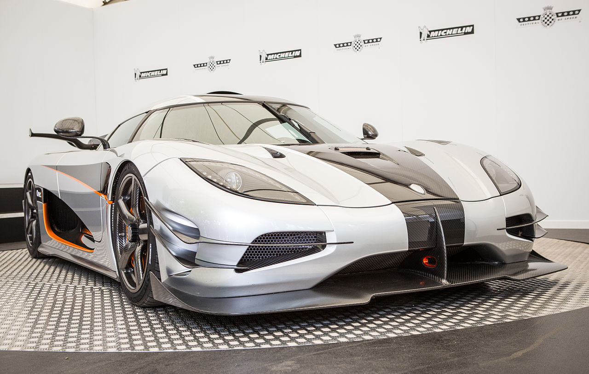
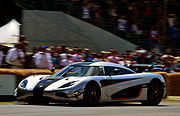

Home
Koenigsegg Agera R4.6milion
In Stock : Yes (1)

Koenigsegg Agera RS 2015
The Agera RS produces 450 kg of downforce at 250 km/h. The 5.0-litre V8 engine now has a power output of 1,176 PS (865 kW; 1,160 hp) on regular pump gasoline. The optional 1-megawatt package increases the engine's power to 1,360 PS (1,000 kW
Fuel range (average)700 km
CO2 emissions (average)371 g/km
Fuel consumption (average)12,8 /100km
Engine capacity (litre)7.7L
Maximum/top speed250 km/h
Acceleration 0-100 km/h3,9 s
Used Car 2015 49 000 km Manual Petrol




